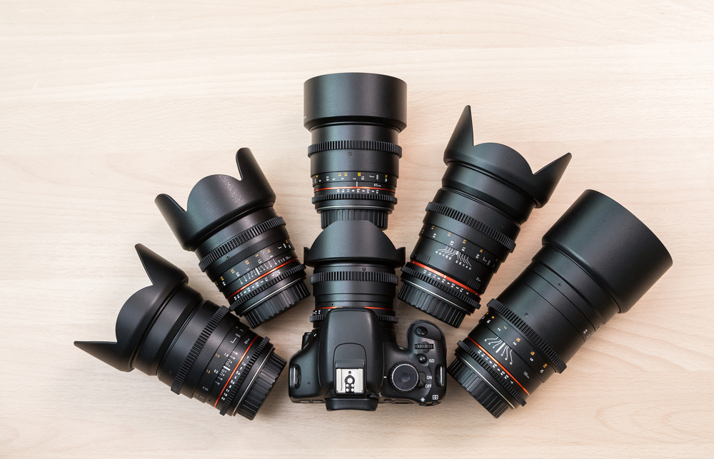

Sužinokite, kaip teisingai pasirinkti fotoaparatą
2020-03-09
Kompaktiniai fotoaparatai
Jie yra nedideli, nesunkiai telpantys į kišenę. Tai yra pirmasis laiptelis po telefono kameros. Šių fotoaparatų nuotraukų kokybė yra šiek tiek geresnė...